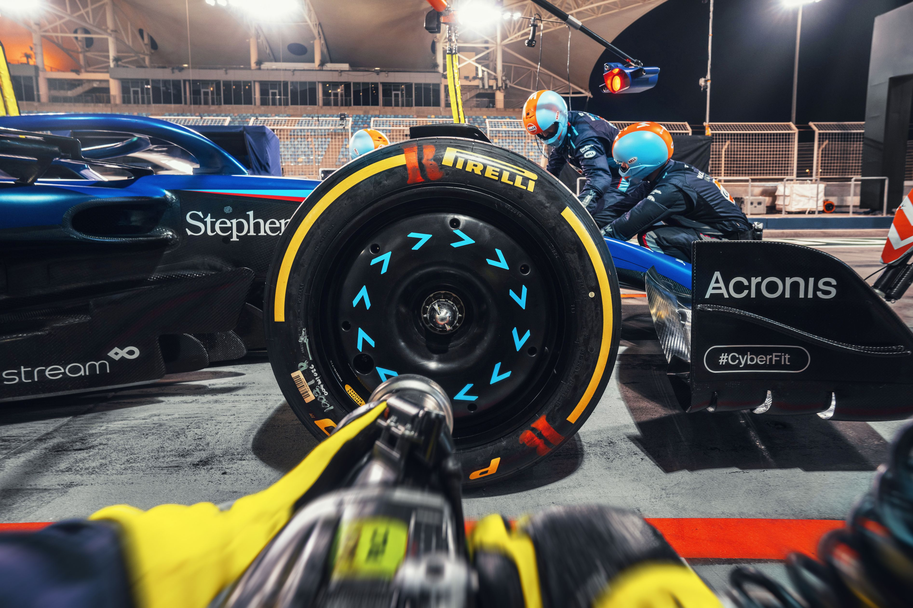
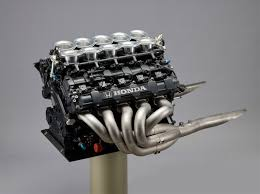

F1
I havent watched much F1 until recently, but it has quickly become one of my favorite sports to watch over the past year. I have always been a racing fan, but for a younger me the schedule was always inconsistent, and hard to keep up with without constant checking in. However last fall I saw one of the races was live on the ESPN app and decided to tune into the end of the Brazilian Grand Prix. This led me to look more into the F1 schedule and when upcoming races were, and I ended up watching the Las Vegas Grand Prix as well 2 weekends later. After this I have watched every Grand Prix except the Japanese and Chinese races as they are very late at night. F1 is not super popular in America, and in my opinion is one of the most exciting sports to watch. I have linked the F1 website at the top of this page for anyone interested in watching.
McLaren
From the moment I started watching F1 during the Brazilian Grand Prix and even before I watched I was a McLaren fan. I Love their vehicles and a McLaren in my dream car, the McLaren P1 is also my favorite car of all time. I didnt know much about who was good and who wasnt at the time, but for now McLaren also happends to be far and away the best F1 team, winning the 2024 Constructors championship, and winning the 2025 championship with 6 races in the season to go. The drivers Lando Norris and Oscar Piastri are some of the best on the grid, and always provide exciting racing when they are battling with other drivers. They currently hold the number 1 and number 2 places in the Drivers championship this year with 1 point separating them. This would be both drivers first drivers championship win, but 4 time back-to-back-to-back-to-back champion Max Verstappen is hot on their heels trailing by around 35 points with 4 races left.
F1 car description
- Wheels
- An F1 car has an open wheel well, meaning the tires are exposed on all sides 
- Engines
- An F1 cars engine is a 90 degree V6 hybrid engine, producing up to 1,000 hp. 
- Halo
- An F1 cars "Halo" is a curved bar around the exposed driver for safety.